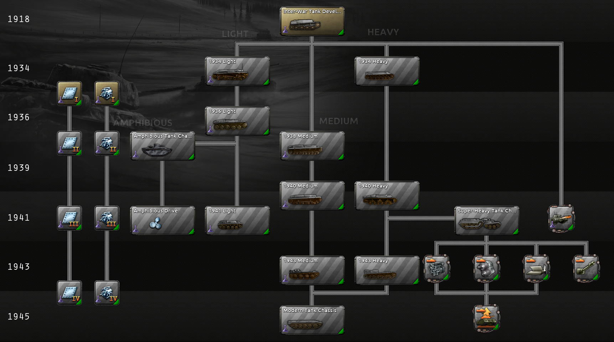
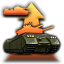

装甲科技
原页面：Armor technology
 一步不退用一个更模块化的系统取代了基础装甲科技体系，并接入坦克设计商。新系统不再研究专用车辆，而是专注于只研究整类车辆的底盘，另有少数装甲科技也会解锁新的装甲与特殊模块。重要的是，坦克设计商中坦克所使用的武器——它们也用于决定某个装甲变型可以承担哪些专门角色——改为作为artillery technologies的一部分进行研究，而许多强大的特殊模块需要其他科技树中的研究，例如支援连科技或Engineering科技。
一步不退用一个更模块化的系统取代了基础装甲科技体系，并接入坦克设计商。新系统不再研究专用车辆，而是专注于只研究整类车辆的底盘，另有少数装甲科技也会解锁新的装甲与特殊模块。重要的是，坦克设计商中坦克所使用的武器——它们也用于决定某个装甲变型可以承担哪些专门角色——改为作为artillery technologies的一部分进行研究，而许多强大的特殊模块需要其他科技树中的研究，例如支援连科技或Engineering科技。
随着《诸神黄昏》引入特殊项目以及随之而来的补丁 1.15，所有装甲科技现在在研究时也会产生陆战突破进度。装甲科技还与
 陆地巡洋舰陆战特殊项目特别紧密交织。
陆地巡洋舰陆战特殊项目特别紧密交织。

Chassis
这些科技解锁新底盘，在此基础上可以在坦克设计商中设计新车辆。第一项底盘科技不专门化，解锁大量基础装甲车辆模块。后续底盘科技在所解锁内容上要专门得多。
| 科技 | 年份 | 基础时间 | 前置条件 | 效果 |
|---|---|---|---|---|

战间期坦克研发 坦克在大战中已证明自己是一种强大的武器。尽管在此后数年间发展有所放缓，它无疑将在未来的战争中扮演重要角色。 |
1918 | 220 days | – |
|
轻型底盘
这些科技用于解锁可用于 轻型坦克、
轻型坦克、 轻型自行高炮、
轻型自行高炮、 轻型自行火炮与
轻型自行火炮与 轻型坦克歼击车的新底盘，以及
轻型坦克歼击车的新底盘，以及 装甲侦察、
装甲侦察、 轻型喷火坦克支援连，并且在有
轻型喷火坦克支援连，并且在有 反抗暴政时还有
反抗暴政时还有 空降轻型装甲支援连。它们还有助于为两栖设计解锁amphibious chassis，其底盘可用于轻型两栖坦克设计。
空降轻型装甲支援连。它们还有助于为两栖设计解锁amphibious chassis，其底盘可用于轻型两栖坦克设计。
轻型底盘往往便宜，能造出更快、更可靠的车辆，尤其是在游戏前期，但它们也往往装甲薄弱，突破远少于更重的同类，武器选项也远更有限，尤其是在后期年份，那时它们作为更专门的战斗支援车辆或用于支援连，比作为前线坦克要好得多。
| 科技 | 年份 | 基础时间 | 前置条件 | 效果 |
|---|---|---|---|---|

基础轻型坦克底盘 技术进步已使战后初期的设计实际上变得过时。现代战场需要一种全新的、简洁的设计，融入冶金与内部布局方面的进步。 |
1934 | 220 days |
| |

改进型轻型坦克底盘 在以往轻型坦克经验基础上进一步改进的型号，这一底盘具有更好的可靠性与维护性。 |
1936 | 220 days |
| |

先进轻型坦克底盘 随着中型坦克日益占据战斗的核心地位，轻型坦克大多退居支援角色。需要一种考虑到这些角色需求的新底盘设计。 |
1941 | 220 days |
|
两栖底盘
这对科技首先为 两栖坦克解锁一个相当受限的底盘，然后解锁一个特殊模块，可用于制造更灵活的
两栖坦克解锁一个相当受限的底盘，然后解锁一个特殊模块，可用于制造更灵活的 轻型、
轻型、 中等与
中等与 重型两栖坦克设计。这些单位往往比非两栖同类更贵，但它们在潮湿的地形中以及执行海军登陆时好得多。它们的设计还可以使用通常保留给其他类型而不被迫如此分类的更重武器，从而使它们保留更多突破，并受益于某些只给予坦克而不给予装甲变型的陆军学说加成。
重型两栖坦克设计。这些单位往往比非两栖同类更贵，但它们在潮湿的地形中以及执行海军登陆时好得多。它们的设计还可以使用通常保留给其他类型而不被迫如此分类的更重武器，从而使它们保留更多突破，并受益于某些只给予坦克而不给予装甲变型的陆军学说加成。
所有两栖坦克都算作特种部队，享受给予特种部队单位的通用加成，但也受国家特种部队容量限制。
| 科技 | 年份 | 基础时间 | 前置条件 | 效果 |
|---|---|---|---|---|

两栖坦克底盘 一种专为浮渡而设计的小型坦克车体。为实现这一点，必须严格限制武器的尺寸和车辆所载装甲的厚度。 |
1938 | 220 days |
| |

两栖驱动 一套浮渡装置加一个小型螺旋桨，使这种坦克能够迅速加装以渡水，既可舰到岸，也可跨越河流。 |
1941 | 220 days |
|
中型底盘
这些科技用于解锁可用于 中型坦克、
中型坦克、 中型自行高炮、
中型自行高炮、 中型自行火炮与
中型自行火炮与 中型坦克歼击车的新底盘，以及
中型坦克歼击车的新底盘，以及 中型喷火坦克支援连。它们也可用于中型两栖坦克。在游戏后期，它们还可用于解锁可用于
中型喷火坦克支援连。它们也可用于中型两栖坦克。在游戏后期，它们还可用于解锁可用于 现代坦克、
现代坦克、 现代自行高炮、
现代自行高炮、 现代自行火炮与
现代自行火炮与 现代坦克歼击车的现代底盘。
现代坦克歼击车的现代底盘。
中型底盘车辆往往在成本与效能之间取得良好平衡。虽然不像其轻型底盘表亲那样便宜，但它们在属性与武器选项上的改进相对于成本增加可以大得多，常常使其在「属性/成本」方面成为最佳选择。它们的重型底盘表亲在一对一作战表现上仍能彻底压过它们，但要贵得多，因此与基于中型底盘的车辆相比，远更难形成关键数量。
| 科技 | 年份 | 基础时间 | 前置条件 | 效果 |
|---|---|---|---|---|

基础中型坦克底盘 一种均衡的中型底盘，为打造各种类型的车辆提供了很大的灵活性。 |
1938 | 220 days |
| |

改进型中型坦克底盘 一种均衡的中型底盘，为打造各种类型的车辆提供了很大的灵活性。 |
1940 | 220 days |
| |

先进中型坦克底盘 一种均衡的中型底盘，为打造各种类型的车辆提供了很大的灵活性。 |
1943 | 220 days |
| |

现代坦克底盘 一种现代化的底盘，大量借鉴了此前的中型坦克，但更加强调速度与机动性，同时还能搭载比中型坦克通常更多的装甲和更大的火炮。其成果是一种能够胜任多种角色的车辆。 |
1945 | 275 days | 以下之一： |
|
重型底盘
这些科技用于解锁可用于 重型坦克、
重型坦克、 重型自行高炮、
重型自行高炮、 重型自行火炮与
重型自行火炮与 重型坦克歼击车的新底盘，以及
重型坦克歼击车的新底盘，以及 重型喷火坦克支援连。它们也可用于重型两栖坦克。在游戏后期，它们还可用于解锁可用于
重型喷火坦克支援连。它们也可用于重型两栖坦克。在游戏后期，它们还可用于解锁可用于 超重型坦克、
超重型坦克、 超重型自行高炮、
超重型自行高炮、 超重型自行火炮与
超重型自行火炮与 超重型坦克歼击车支援连的超重型底盘；有了《诸神黄昏》，这些还可以导致为庞大的
超重型坦克歼击车支援连的超重型底盘；有了《诸神黄昏》，这些还可以导致为庞大的
 陆地巡洋舰支援连开发装备。重型底盘科技可以作为中型底盘科技的替代前置，用于解锁可用于现代坦克、
陆地巡洋舰支援连开发装备。重型底盘科技可以作为中型底盘科技的替代前置，用于解锁可用于现代坦克、 现代自行高炮、现代自行火炮与现代坦克歼击车的现代底盘。
现代自行高炮、现代自行火炮与现代坦克歼击车的现代底盘。


重型底盘车辆在作战效能方面往往惊人，但生产与资源成本高得离谱。它们也往往比其更轻的表亲慢得多，并在更恶劣的条件下承受更大的地形惩罚。尽管如此，在战场进攻中它们基本上无可匹敌，面对这些车辆的对手要么必须用自己的同类来对抗，要么找到一种不那么常规的方式来对付它们。
| 科技 | 年份 | 基础时间 | 前置条件 | 效果 |
|---|---|---|---|---|

基础重型坦克底盘 一种大型底盘，可以安装重型火炮、厚装甲，或两者兼而有之。 |
1934 | 220 days |
| |

改进型重型坦克底盘 一种大型底盘，可以安装重型火炮、厚装甲，或两者兼而有之。 |
1940 | 275 days |
| |

超重型坦克底盘 一种巨型车辆，能够安装最重的装甲和最大的火炮，但因此相当缓慢且可靠性不高。 |
1941 | 330 days |
| |

先进重型坦克底盘 一种大型底盘，可以安装重型火炮、厚装甲，或两者兼而有之。 |
1943 | 275 days |
|
升级
装甲升级
这些科技提高坦克设计商中可用的最大装甲升级量，使坦克能以增加成本、降低速度与可靠性为代价抵抗更多伤害。有些还解锁新的装甲与防御特殊模块。
| 科技 | 年份 | 基础时间 | 前置条件 | 效果 |
|---|---|---|---|---|

基础装甲防护 大战期间的坦克只需应对敌方轻武器，因此它们的装甲相当薄也无妨。新一代反坦克武器让战场对坦克而言危险得多，需要厚重得多的防护。 |
1935 | 110 days | – |
5及以上的装甲升级值。 |

改进型装甲防护 随着世界各地装备越来越重的反坦克武器，下一代坦克将需要更好的防护。 |
1938 | 110 days |
10及以上的装甲升级值。 | |

先进装甲防护 已部署反坦克炮的极限或许已经达到，而新一代坦克将携带更先进的武器，能够在远距离击穿目前任何级别的防护。 |
1941 | 110 days |
15及以上的装甲升级值。装甲裙板 | |

现代装甲防护 在战争期间，坦克面临的威胁成倍增加，从敌方坦克、反坦克炮、专用坦克歼击车，一直到发射空心装药、能击穿重型装甲的现代步兵武器。我们必须研制新的防护手段，让我们的坦克在这些威胁面前生存下来。 |
1944 | 110 days |
18及以上的装甲升级值。 |
引擎升级
这些科技提高坦克设计商中可用的最大引擎升级量，使坦克能以增加成本与燃料消耗、降低可靠性为代价移动更快。
| 科技 | 年份 | 基础时间 | 前置条件 | 效果 |
|---|---|---|---|---|

基础引擎 大战时期的坦克是缓慢笨重的巨兽，而现代坦克在很大程度上依靠速度与机动性来取胜。 |
1935 | 110 days | – |
5及以上的引擎升级值。 |

改进型发动机 随着火炮更大、装甲更重，新一代坦克需要更强劲的发动机才能保持机动。 |
1938 | 110 days |
10及以上的引擎升级值。 | |

先进引擎 机械化战争是一种需要快速决策、部队与补给快速机动的作战形式。如果我们的坦克要携带现代武器和足以在战场上存活的装甲，就需要强劲的发动机来跟上摩托化步兵。 |
1941 | 110 days |
15及以上的引擎升级值。 | |

现代发动机 现代战争迫使坦克增加了众多新部件，使车辆重量大幅上升。要让这么大的质量动起来，我们需要动力十分强劲的发动机。 |
1944 | 110 days |
18及以上的引擎升级值。 |
火焰喷射器升级
该科技改进地形加成，针对 轻型、
轻型、 中等与
中等与 重型喷火坦克，并为它们解锁一种更强大的武器。
重型喷火坦克，并为它们解锁一种更强大的武器。
| 科技 | 年份 | 基础时间 | 前置条件 | 效果 |
|---|---|---|---|---|

先进火焰喷射器 增强型喷火系统，非常适合清除防御工事，并在近距离战斗中造成毁灭性杀伤。 |
1941 | 110 days |
|
陆上巡洋舰升级
这些科技改进 陆上巡洋舰的能力或为其解锁新模块。它们都要求已完成
陆上巡洋舰的能力或为其解锁新模块。它们都要求已完成 陆地巡洋舰特殊项目。有些还为
陆地巡洋舰特殊项目。有些还为 超重型坦克、
超重型坦克、 超重型自行高炮、
超重型自行高炮、 超重型自行火炮与
超重型自行火炮与 超重型坦克歼击车支援连提供收益。
超重型坦克歼击车支援连提供收益。
| 科技 | 年份 | 基础时间 | 前置条件 | 效果 |
|---|---|---|---|---|

海军引擎改装 运用强化曲轴、高扭矩变速箱和专用冷却系统等舰船工程技术，可以提升陆地巡洋舰发动机的输出功率与耐用性，使其能更好地承受巨大的重量与应力。 |
1943 | 110 days |
|
|
传动改进 改进齿轮比、离合器机构与液力变矩器，造出能承受陆地巡洋舰极端功率与重量的更高效传动系统，提升整体机动性并减少机械损耗。 |
1943 | 110 days |
|
|

专门化野战手册 为陆地巡洋舰车组编写详尽的训练手册，涵盖有效指挥这些巨型战争机器所需的独特操作程序、维护规程与复杂战场战术。 |
1943 | 110 days |
|
|

高冲击歼灭者机炮 这种武器专为击穿极厚的装甲而设计，其高动能使其成为对抗其他超重型坦克的强大手段。 |
1943 | 110 days |
|
|
 武器火控 采用先进的瞄准光学设备、测距仪和陀螺稳定器来提升武器精度与射击协调性，确保这些火炮尽管后坐力巨大、转向缓慢，仍能有效打击目标。 |
1945 | 110 days | 以下之一： |
|
秘密科技
这些科技仅在适当条件下对特定国家可用。
| 科技 | 前置条件 | 效果 |
|---|---|---|
| mountain_tanks | 可解锁此科技： | |
| NOR_rikstanken_tech | 可解锁此科技：
|
|
| jungle_tanks | 可解锁此科技：
|
|
| jungle_heavy_tanks | 可解锁此科技：
|
|
参考资料
| 政治 | 意识形态 • 阵营 • 国策 • 理念 • 政府 • 傀儡国 • 流亡政府 • 外交 • 世界紧张度 • 内战 • 占领 • 力量均势 |
| 生产 | 贸易 • 生产 • 建造 • 装备 • 燃料 • 军工组织 • 国际市场 |
| 科研与科技 | 科研 • 步兵科技 • 支援连科技 • 装甲科技（也包括 未拥有绝不后退）• 火炮科技 • 陆军学说 • 特种部队学说 • 海军科技（也包括 未拥有全民持枪）• 海军支援科技 • 海军学说 • 空军科技（也包括 未拥有以血盟誓）• 空军学说 • Engineering科技 • Industry科技 • 特殊项目 • 科学家 |
| 军事与战争 | 战争 • 和平会议 • 陆军单位 • 陆战 • 师编制设计 • 坦克设计 • 陆军编制器 • 集团军 • 指挥官 • 作战计划 • 战斗战术 • 舰船 • 舰船设计（伦敦海军条约）• 海战 • 飞机设计 • 空战 • 经验 • 军官团 • 损耗与事故 • 后勤 • 人力 • 核弹 • 突袭 |
| 间谍活动 | 情报 • 情报机构 • 特工 • 任务 • 行动 |
| 地图 | 地图 • 省份 • 地形 • 天气 • 州 |
| 事件与决议 | 事件 • 决议 |